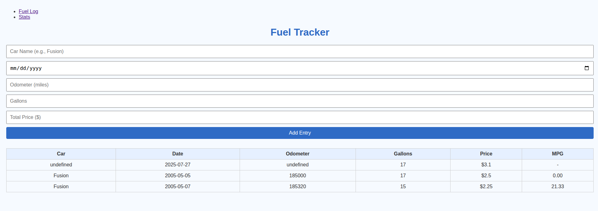
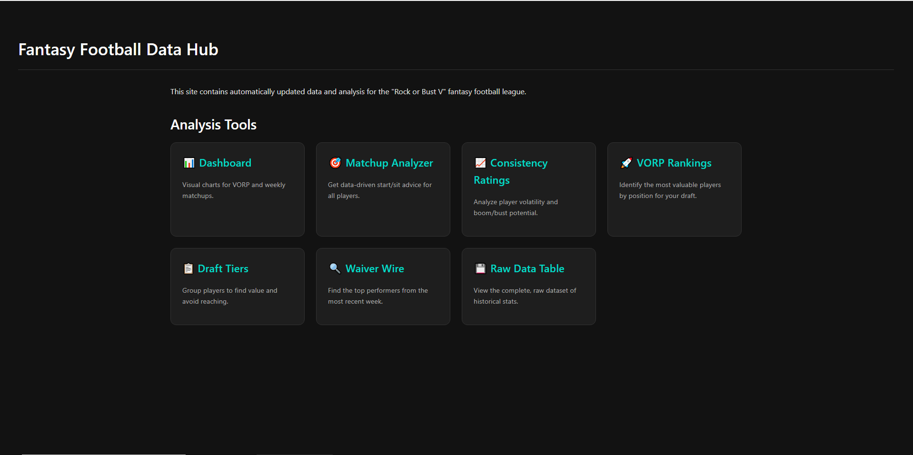

I have a significant number of completed projects awaiting publication, which will be made available on this platform in the near future.

Diet/Bulk Calorie Analyzer
• Problem solved: Forecast how much weight you should gain or lose during a bulk /cut cycle and compare it to what actually happened.
• Data sources: Apple Watch (Health CSV), Cronometer nutrition logs, Hevy workout exports.
• How it works: Pandas cleans & joins the CSVs → daily energy balance model → Matplotlib charts predicted vs actual weight-curve with error bands.
• Outcome: Gives athletes an instant sanity-check on their diet without manual spreadsheets.
Full Source →

Fantasy Football Analyzer (v1)
• Goal: Win waiver wire and trades by turning raw ESPN data into actionable scores.
• Stack: Python / Flask UI, ESPN private API, simple linear-reg model (scikit-learn) for rest-of-season value.
• Features: Waiver priority list, trade-value calculator, weekly start/sit optimiser.
• v2 roadmap: Live API polling, LLM-generated matchup notes, and containerised deployment.

Ubuntu Server Homelab
• Why: Cheap on-prem sandbox for automation and privacy-focused services.
• Infra: Ubuntu 22.04 LTS on mini-PC, accessed via SSH and Tailscale VPN; Docker + systemd for services.
• Workloads: Python scrapers, static-site hosting, uptime-kuma monitoring, and a locally-served 8-bit LLM during R&D.
• Ops: Automated Off-site backups (rclone → Wasabi), Nginx reverse-proxy, cron-based log rotation.

Gas Tracker PWA
Offline-capable web app that logs fill-ups, stores data in localStorage, and computes MPG & cost-per-mile.
Deep Dive →

Fantasy Football Data Hub (WIP)
A fully automated pipeline that collects multiple seasons of NFL data via
nfl-data-py, runs custom analyses (VORP, consistency ratings, matchup and
tier calculators) using Python and GitHub Actions, and serves interactive charts
to give data‑driven insights for drafting, weekly matchups and waiver pickups:contentReference[oaicite:4]{index=4}.
GitHub Repo →
 Daniel Staggs
Daniel Staggs